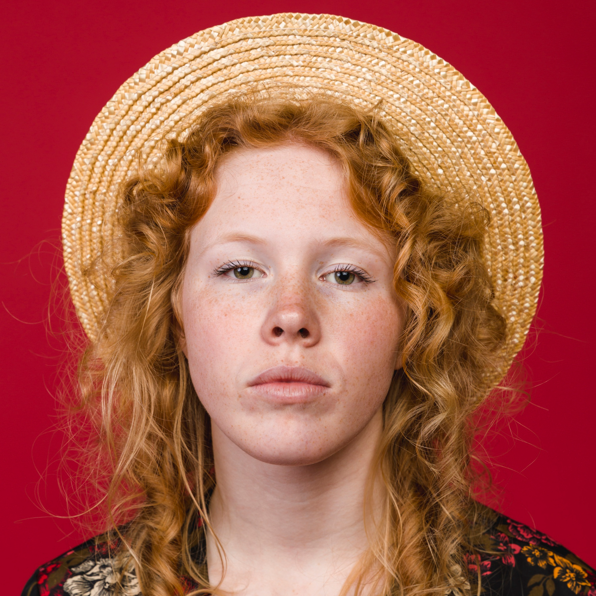

Natalia Vurunova
CEO
Natalia Vurunova is an inspiring leader and entrepreneur who heads a company that owns three pastry shops. Her passion for creating delicious desserts and unique perspective on business has led to her patisseries becoming an integral part of the city's gastronomic world. Natalia is famous not only for her talent in cooking, but also for her ability to inspire her team to achieve high results.
Anya Tokman
Chief Pastry Chef
Anya Tokman is a talented head pastry chef. Her creative approach to creating desserts brings flavor and sophistication to each product, making them true works of art. Her unique recipes and attention to detail allow her to raise the bar in the world of pastry art, attracting customers with her unique style and impeccable taste.
Vadim Fedot'ev
Pastry chef
Vadim Fedotov is a passionate and dedicated confectioner. His love for his work is evident in every dessert he creates. Vadim brings his passion and creativity to each product, striving to delight customers with unique combinations and presentation. His dedication to his profession makes him an indispensable member of the team and drives him to achieve high quality standards in his work.

Margo Witt
Pastry chef
Margot Whitt is an outstanding pastry chef who literally lives her craft. Her love for creating sweet masterpieces is evident in every detail, from the careful selection of ingredients to the impeccable decoration of the finished products.

Maryna Trishko
Pastry chef
Marina Trishko is a talented pastry chef. Her dedication to her work is evident in the way she creates her desserts with love and attention. Marina appreciates every opportunity to delight her customers with her unique recipes. Her commitment to excellence makes her an indispensable asset to the team, and her dedication and commitment to her profession make her work a true art.
Mikhail Kulchuk
Manager
Mikhail Kulchuk is an energetic manager who promotes the project founded by his wife with great zeal and dedication. He makes various efforts to raise the level of recognition and attract new clients using modern marketing strategies and social networks. Mikhail puts all his energy and talent into his work to support his wife and help her business thrive.